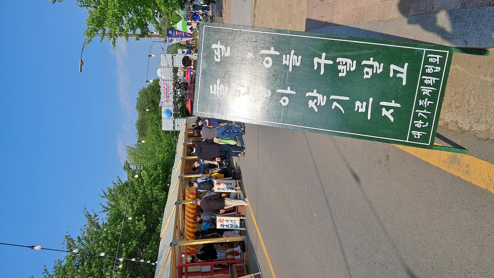
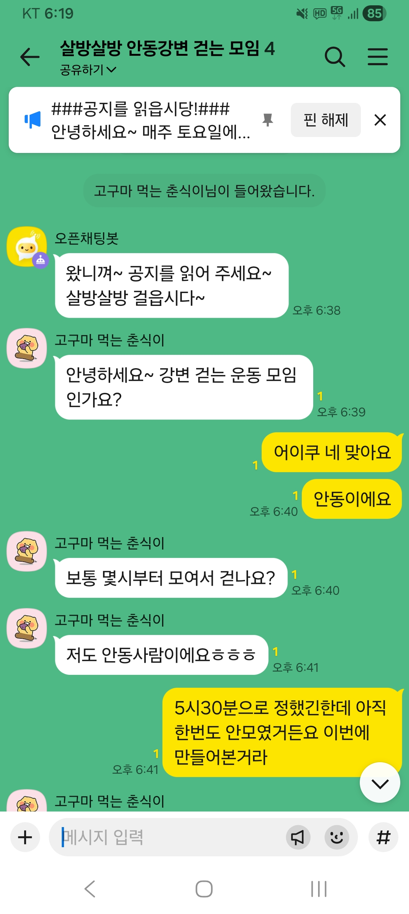

본문
조동이형은 성격이 급해요.
성격만 급하지, 몸은 약해빠졌어요.
결국, 걷다가 다리를 절뚝이네요.
이런, 이런...
몸이 고장난 줄 알았는데,
마음도 고장이 났어요.
첫 모임 이후로, 고민을 많이 했나봐요...
대문자 I인 조동이형...
잘 해나갈 수 있겠죠?
"홍보를 좀 해주세요~~"
"당근나라에 모임을 만들어 BOA요~~"
네... 알겠습니닷 ! ! !
퍼뜩 맹글어 보겠심더 ! !
salbang-diary · local index
자동 정리 기준: src/content/posts/ 내 마크다운 파일
기록 목록(/records/)에는 2026-05-10 이후 글만 표시됩니다.
| # | 날짜 | 제목 | 한 줄 요약 |
|---|---|---|---|
| 1 | 2026-05-23 | 다리를 절뚝이며 걷던 날, 조동이형의 마음도 고장 났다. 그래도 천천히, 홍보와 당근 모임까지 약속했어요. | |
| 2 | 2026-05-16 | 목감기와 Gemini·얼음 사이를 오간 뒤, 저녁 7시 첫 살방살방 걷기 모임을 시작했어요. | |
| 3 | 2026-05-15 | 죽어 있던 오픈톡방에 춘식이님이 들어오며, 첫 모임을 향한 마음이 다시 불붙었어요. | |
| 4 | 2026-05-10 | 안동 강변 토요 모임의 추억을 여기 남깁니다. |
본문
조동이형은 성격이 급해요.
성격만 급하지, 몸은 약해빠졌어요.
결국, 걷다가 다리를 절뚝이네요.
이런, 이런...
몸이 고장난 줄 알았는데,
마음도 고장이 났어요.
첫 모임 이후로, 고민을 많이 했나봐요...
대문자 I인 조동이형...
잘 해나갈 수 있겠죠?
"홍보를 좀 해주세요~~"
"당근나라에 모임을 만들어 BOA요~~"
네... 알겠습니닷 ! ! !
퍼뜩 맹글어 보겠심더 ! !
본문
갑작스레 찾아온 춘식이님을 동료로 받아들여버린 조동이형...
그에 대한 반작용인가?
dog 뜬금없이 목감기에 걸려버렸네요.
새벽 3시 30분에 깼다가,
망할 Gemini의 충고를 듣고 얼음을 1시간 가량 물고 있다가 잠들었습니다.
편도가 목구멍 근처를 다 가리킨다는 것을 처음 알았습니다.
고마워요 Gemini.
당신 덕분에, 내 편도가 그렇게 성장할 수 있는 녀석인 지 처음 알았어요.
거의 잠을 못 잔 몸을 이끌고
신나게 병원에 가서,
의사 선생님께 참 잘했어요 칭찬 스티커 받은 다음에
대망의 오후 7시에 첫 살방살방 걷기 모임을 시작했습니다.
조동이형은 너무 긴장한 나머지,
신나게 본인의 TMI와 질문 공격을 퍼붓고
집에 와서 뻗었답니다.
그럼 20000.
오픈채팅방의 대표 이미지는, 제가 2주 전에 열린 "차전장군 노국공주 행사"에서 찍었던 사진입니다~

본문
평화롭던 어느 날...
라이언(가명)이라는 친구와 아무런 채팅을 하고 있지 않던 죽어있는 오픈톡방에
춘식이님이 들어왔다!!!
이 얼마나 귀중한 인연인가! ㅠㅠ
책임감이 더욱 막중해진다...
혹자는 그냥 힘 쫙 빼고 물 흘러가는 대로 살라고 하지만,
나에겐 그건 불에 빠뜨리는 것과 다름없다.
자, 어서 계획을 세우고 우리의 건강을 지키기 위해
재미있는 활동들을 기획해보자구!!

본문
앞으로 여기에 달리고 걸은 날의 짧은 글과 사진을 올릴 거예요.
거리나 시간은 신경 쓰지 않아도 됩니다. 강변 풍경이 계절마다 달라지는 것처럼, 우리의 기록도 천천히 쌓이면 좋겠어요.
src/content/posts/YYYY-MM-DD-영문슬러그.md/records/ — RECORDS_SINCE(2026-05-10) 이후 글만 표시docs/new-post.template.mdAGENTS.md